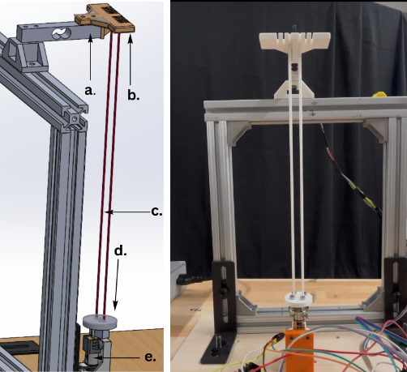
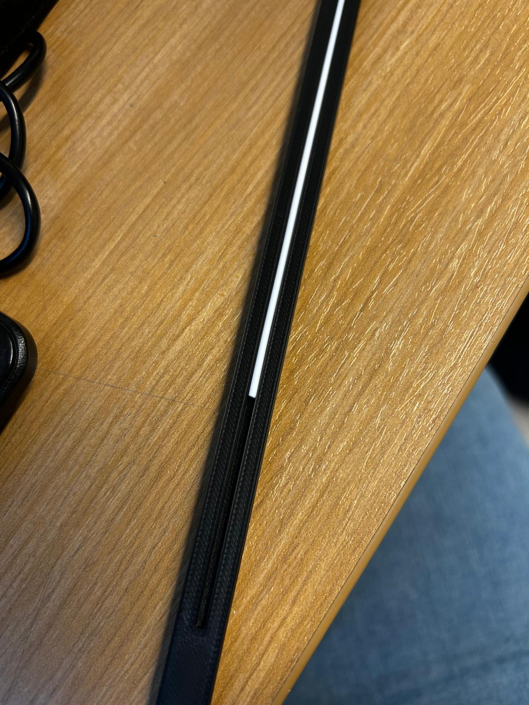
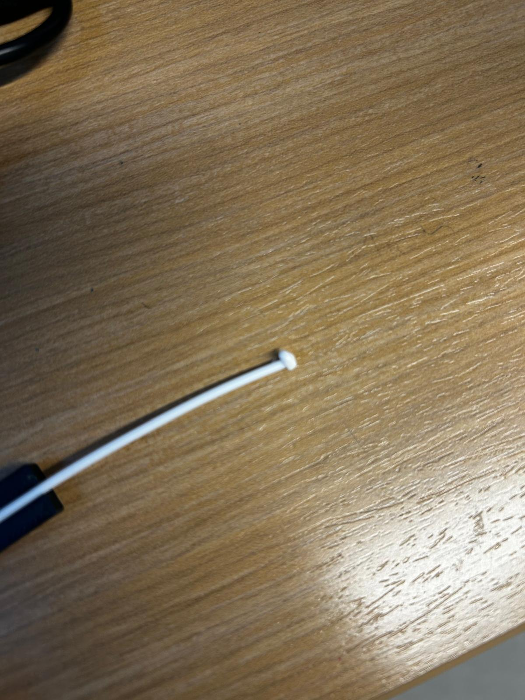
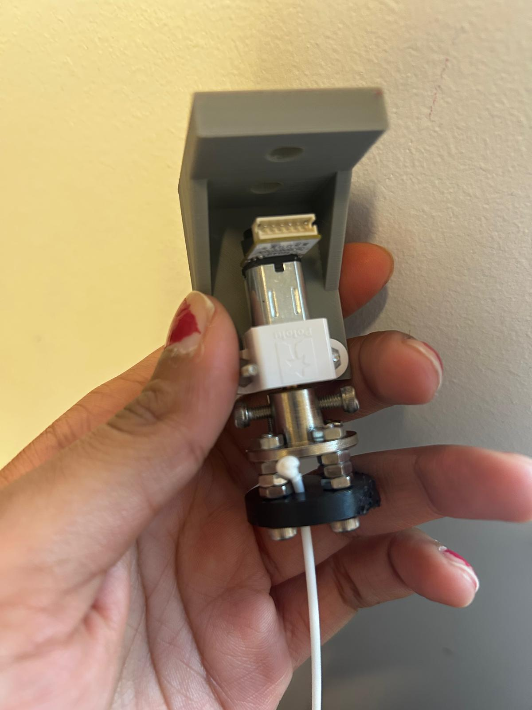
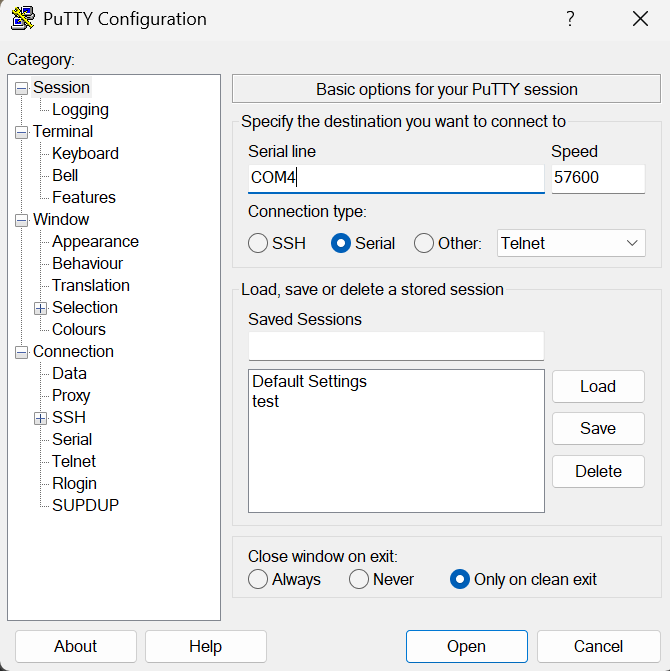
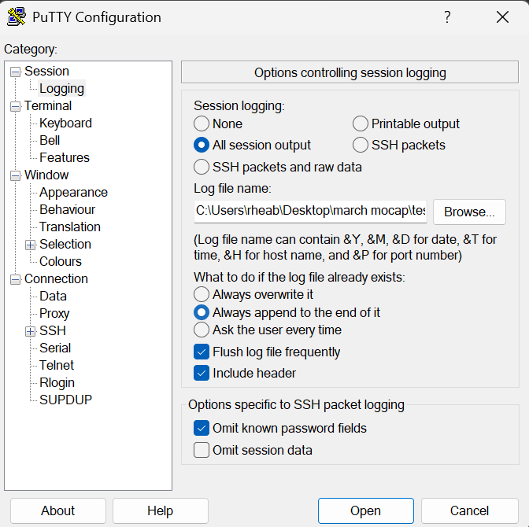
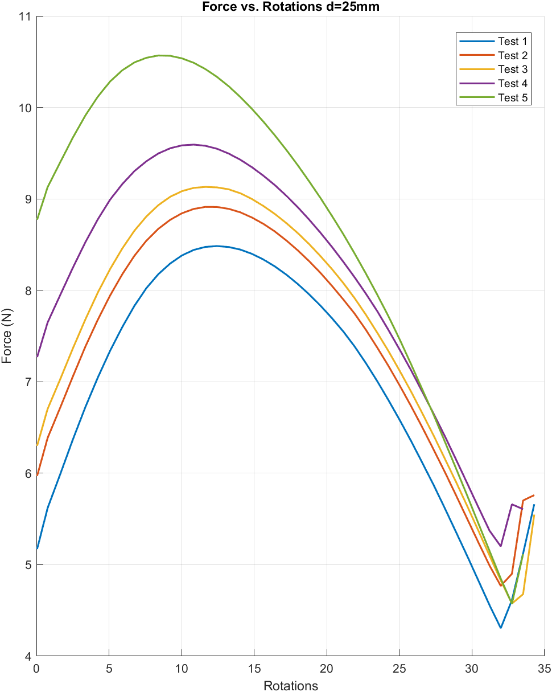

Experiments
Force Test Overview
This page summarizes the benchtop twisted string actuator (TSA) force tests used to validate the contact-pressure-based tension model and identify stable operating zones for assistive knee actuation.
Test setup images






Setup
- Elastic tendon: TPU 85A filament, 1.75 mm diameter.
- Actuation: N20 DC gearmotor (stall torque = 3 kg-cm).
- Configuration: paired-string routing with fixed slot array and maintained pre-tension.
- Measurement: 5 kg load cell + HX711, measuring axial force Fz.
- Constraint: linear contraction mechanically constrained to isolate force generation.
- Baseline inter-string spacing: 0.05 m (unless otherwise stated).
Primary variables
- Motor rotational displacement, θ.
- Radius of the strings.
- Number of strings, K.
Test setup assembly
- Prepare frame and holders.
- Install motor setup (motor holder, motor cap, flange bearing, string base).
- Install load cell holder and align the sensing axis with string loading direction.
- Install string holder and verify consistent pre-tension before each trial.
String preparation
- Cut strings to match the selected slot pattern.
- Heat-seal (burn) string ends.
- Insert strings into motor flange slots.
- Attach strings to string holder.
Data logging instructions
- Load the test firmware from this repo.
- Open PuTTY and set Connection type: Serial.
- Set serial line (for example COM4) and baud rate 57600.
- Under Logging, select All session output and save as a .txt file.
- Close Arduino IDE serial monitor before PuTTY logging to avoid serial-port interference.
- Run test and record data.
Post-processing
time_s = time_ms / 1000revolutions = encoder_ticks / 7200
Observed behavior
- Force generally increases approximately linearly in the early twisting region.
- A maximum-force region is reached before nonlinear effects dominate.
- At higher twist levels, force can dip and then spike due to double-coiling behavior.

Conclusions
Unlike Twisted string actuators where the force saturates with increased angular displacement. We observe a drop in the force after an initial peak. This is attributed to the material properties of the Elastic strings